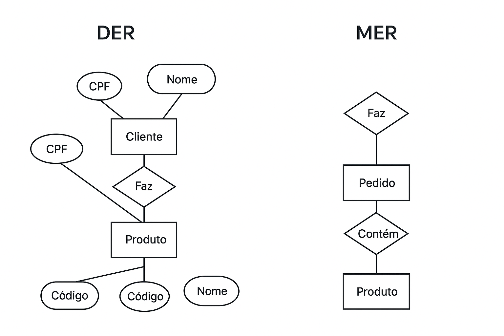

Fundamentos de Banco de Dados
O que é um SGBD? Tipos e Aplicações
Um SGBD, ou Sistema Gerenciador de Banco de Dados, é um software responsável por criar, gerenciar e manipular bancos de dados de forma organizada e segura. Ele permite armazenar informações e recuperá-las quando necessário, garantindo integridade, segurança e eficiência. Existem diversos tipos de SGBDs, como os relacionais (ex: MySQL, PostgreSQL, Oracle), que organizam dados em tabelas; os orientados a objetos, que armazenam dados em forma de objetos; os hierárquicos, que usam uma estrutura em árvore; e os de rede, que conectam registros de forma mais complexa. Eles são amplamente aplicados em sistemas empresariais, sites, aplicativos e plataformas que dependem de armazenamento constante de dados.
Quais os principais bancos de dados
Os principais bancos de dados utilizados atualmente são o MySQL, o PostgreSQL, o Oracle Database, o Microsoft SQL Server e o MongoDB. O MySQL é muito popular em sites e aplicações web, o PostgreSQL é conhecido pela robustez e suporte a dados complexos, o Oracle Database é bastante usado em grandes empresas devido à segurança e alto desempenho, o SQL Server é o banco de dados da Microsoft integrado a diversos sistemas corporativos, e o MongoDB é um banco de dados NoSQL que armazena dados em formato de documentos, ideal para aplicações modernas e dinâmicas.
Quais os principais bancos de dados
Os principais bancos de dados utilizados atualmente são o MySQL, o PostgreSQL, o Oracle Database, o Microsoft SQL Server e o MongoDB. O MySQL é muito popular em sites e aplicações web, o PostgreSQL é conhecido pela robustez e suporte a dados complexos, o Oracle Database é bastante usado em grandes empresas devido à segurança e alto desempenho, o SQL Server é o banco de dados da Microsoft integrado a diversos sistemas corporativos, e o MongoDB é um banco de dados NoSQL que armazena dados em formato de documentos, ideal para aplicações modernas e dinâmicas.
O que é um dicionário de dados? Quais os tipos de dados de um banco de dados
O dicionário de dados é uma espécie de “catálogo” que descreve todas as informações de um banco de dados, como tabelas, colunas, tipos de dados, restrições e relacionamentos. Ele é essencial para entender a estrutura e o funcionamento do banco, sendo uma referência para desenvolvedores e administradores. Os tipos de dados mais comuns em um banco de dados são: numéricos (como INTEGER, FLOAT e DOUBLE), usados para valores matemáticos; de texto (como CHAR e VARCHAR), usados para palavras e frases; de data e hora (como DATE e TIMESTAMP), para registrar momentos específicos; e lógicos (como BOOLEAN), que armazenam valores verdadeiro ou falso.
O que é uma modelagem de banco de dados? E o modelo DER? MER?
A modelagem de banco de dados é o processo de planejar e representar como os dados serão organizados, armazenados e relacionados dentro de um sistema. Ela ajuda a evitar erros e redundâncias antes da criação do banco real. O modelo DER (Diagrama Entidade-Relacionamento) é uma representação visual que mostra as entidades (como pessoas, produtos, clientes) e seus relacionamentos, facilitando o entendimento da estrutura. Já o MER (Modelo Entidade-Relacionamento) é o conceito teórico que serve de base para a criação do DER — ou seja, o MER define os conceitos e o DER é a representação gráfica deles.
Explique um exemplo de um diagrama DER
Um exemplo simples de DER seria um sistema de loja com as entidades “Cliente”, “Pedido” e “Produto”. O “Cliente” faz um ou mais “Pedidos”, e cada “Pedido” pode conter vários “Produtos”. No diagrama, as entidades são representadas por retângulos, os relacionamentos por losangos e os atributos por elipses. Assim, veríamos conexões como Cliente → Faz → Pedido → Contém → Produto, mostrando visualmente como os dados se conectam dentro do sistema.
Explique um exemplo de um diagrama MER
O diagrama MER seria a representação conceitual do mesmo caso da loja, mostrando de forma mais abstrata as entidades e seus relacionamentos. Ele define que “Cliente”, “Pedido” e “Produto” são entidades e que existe um relacionamento de “Faz” entre Cliente e Pedido, e um de “Contém” entre Pedido e Produto. No MER, o foco é entender o conceito do relacionamento, sem necessariamente detalhar atributos ou chaves, sendo um passo anterior à criação do DER.
Exemplo de diagrama DER e MER
